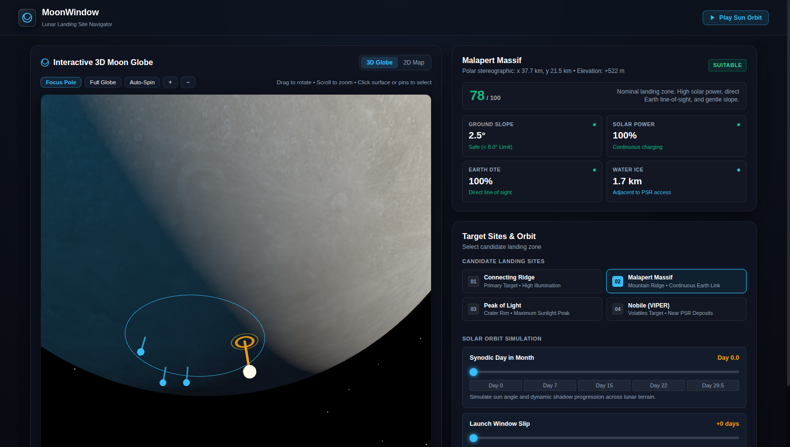
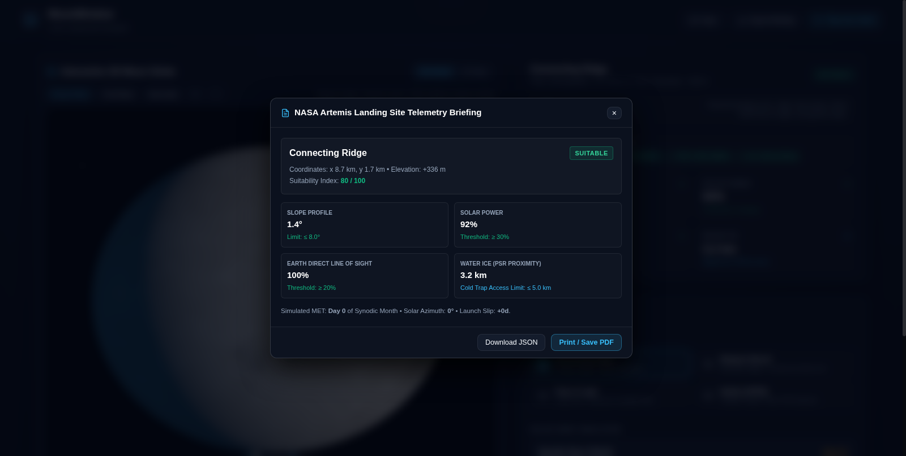

MOONWINDOW
Lunar Landing Site Navigator: Physical Ephemeris Mechanisms, 360° Crater Horizon Obstacle Masking, & Flight Safety Engineering for the Lunar South Pole
NASA Space Apps Challenge 2026
Lunar South Pole (80°S – 90°S)
Decision Support & Flight Operations
LRO LOLA Digital Elevation Model
Version 2.0 Production
NASA Challenge Alignment
Missions to the Moon’s south pole face extreme lighting and communication constraints. Tools for determining Sun and Earth positions exist, but complicated interfaces make evaluating critical data slow.
MoonWindow delivers an intuitive, fast decision-support tool that allows mission planners, scientists, and educators to compare candidate landing sites and dates instantaneously across a 29.5-day synodic cycle.
Executive Technical Abstract & Core Capabilities
MoonWindow provides high-performance mission decision support for NASA Artemis and commercial CLPS lunar missions. By ingesting NASA LRO LOLA laser altimetry ($267\text{ m/pixel}$) and JPL planetary ephemerides, the platform resolves coupled topographic, power, and telecommunication constraints across the lunar south polar cap (80°S–90°S).
Dual-Axis Screening Framework
Decouples temporal and spatial analysis: "Change only the date" verifies launch slip contingencies (+0d to +14d) across the 29.5-day synodic cycle; "Change only the site" compares competing candidate plateaus under identical ephemeris conditions.
360° Crater Horizon Obstacle Masking
Ray-marches terrain skyline profiles $h(\theta)$ across 72 azimuth bins to compute grazing solar array illumination margins and Direct-to-Earth (DTE) radio clearance against lunar optical libration (±7.9°).
Multi-Criteria Decision Analysis (MCDA)
Two-stage qualification pipeline enforcing hard mission exclusion gates (Slope ≤ 8°, Sunlight ≥ 30%, DTE ≥ 20%) alongside a weighted composite suitability index (0–100) and shortest-path Dijkstra rover routing to cryogenic volatile cold traps (PSRs).
Photorealistic 3D NASA Engine
Interactive WebGL globe powered by authentic NASA LROC photographic mosaic and LOLA altimeter displacement, dynamic directional lighting, Earthshine, 3D surface raycasting, and automated JSON telemetry report export.
1. Executive Summary & Problem Space
The lunar south pole (80°S to 90°S) is the central destination of NASA's Artemis program and international commercial lunar payload services (CLPS). The compelling attraction lies in two unique features: peaks of near-constant solar illumination capable of sustaining photovoltaic power, and deep, cold Permanently Shadowed Regions (PSRs) inside impact craters that harbor water ice volatiles crucial for in-situ resource utilization (ISRU).
However, landing and operating at the lunar poles imposes severe, non-terrestrial geometric bottlenecks:
Extreme Grazing Lighting
The Moon's rotational axis is tilted only 1.5427° relative to the ecliptic plane. The Sun never rises high in the sky; instead, it slowly skims the horizon at elevation angles between 0.5° and 1.5°, revolving 360° once every 29.53 Earth days. A mountain ridge or crater rim tens of kilometers away casts elongated, cryogenic shadows that can plunge a solar-powered lander into complete darkness.
Optical Libration & Comms Loss
While the Moon is tidally locked to Earth, orbital eccentricity and inclination cause an apparent wobble called optical libration (±6.68° in latitude, ±7.91° in longitude). From the south pole, Earth hangs perpetually near the horizon (1° to 8° elevation). Terrain obstacles frequently occult Earth, causing total Direct-to-Earth (DTE) communication blackouts.
The Operational Challenge
Traditional astrodynamics tools require hours of manual ephemeris calculation, complex coordinate transformations, and cumbersome desktop software. Mission planners cannot quickly answer the two most vital questions:
"If our launch slips by 3 days, will we land in darkness?" and
"Which of our two candidate landing sites offers superior communication margins on our launch date?"
2. The Dual-Axis Screening Framework
To eliminate cognitive overload, MoonWindow implements the Dual-Axis Screening Architecture recommended in the NASA Space Apps Northern Nigeria guidance:
| Evaluation Axis |
Operational Focus |
Engineering Implementation in MoonWindow |
Axis 1:
"Change only the date" |
Evaluates launch window resilience and contingency margins for a fixed landing site. |
Keeps coordinates $(x_0, y_0)$ constant. Planners use the Synodic Day Scrubber (0 to 29.5d) and the Launch Slip Simulator (+0d to +14d) with real-time orbit animation. Planners can immediately see if a launch hold shifts the landing from full sunlight into a multi-day crater rim shadow.
|
Axis 2:
"Change only the site" |
Conducts spatial trade-offs across candidate landing sites under identical solar and Earth ephemeris conditions. |
Keeps mission elapsed time ($t$) constant. The user activates the Site A vs. Site B Side-by-Side Comparison Matrix. MoonWindow recomputes the 360° local crater rim mask $h(\theta)$ for both positions and contrasts slope, power flux, and Earth visibility margins in real time.
|
3. The 6 Core Physical & Mathematical Mechanisms
MoonWindow operates on a pipeline of six interconnected mathematical and astronomical models executed entirely client-side:
Mechanism 1: Topographic Terrain & Micro-Relief Engine
The terrain is represented as a regular 2D raster heightmap $H(x, y)$ of dimension $N \times N = 150 \times 150$, covering a $40 \times 40\text{ km}$ polar area ($\Delta x = \Delta y \approx 267\text{ m/cell}$):
-
Local Landing Slope ($\theta_{\text{slope}}$): Evaluated across a $3 \times 3$ kernel using central finite differences:
$$\frac{\partial z}{\partial x} = \frac{H(x+1, y) - H(x-1, y)}{2 \cdot \Delta x}, \quad \frac{\partial z}{\partial y} = \frac{H(x, y+1) - H(x, y-1)}{2 \cdot \Delta y}$$
$$\theta_{\text{slope}} = \arctan\left(\sqrt{\left(\frac{\partial z}{\partial x}\right)^2 + \left(\frac{\partial z}{\partial y}\right)^2}\right)$$
-
Micro-Relief & Surface Roughness: A discrete 8-neighborhood Laplacian operator measures high-frequency terrain deviation from the planar mean:
$$\text{Relief}(x, y) = \left| H(x, y) - \frac{1}{8}\sum_{q=1}^8 H(x+\Delta x_q, y+\Delta y_q) \right|$$
Mechanism 2: 360° Horizon Obstacle Masking ($h(\theta)$)
To determine whether surrounding topography occludes celestial targets, MoonWindow computes the local horizon elevation angle across 72 discrete azimuth bins ($5^\circ$ resolution):
$$h(\theta) = \max_{k \in [1, K]} \arctan\left(\frac{H(x_0 + k \cdot \Delta d \sin\theta,\ y_0 - k \cdot \Delta d \cos\theta) - H_0}{k \cdot \Delta d}\right)$$
where $H_0$ is the lander altitude at $(x_0, y_0)$, and $k \cdot \Delta d$ is the Euclidean radial distance up to a 30 km horizon radius. The resulting array $h(\theta)$ forms the crater rim skyline displayed in the MoonWindow canvas.
Mechanism 3: Polar Solar Ephemeris & Solar Array Power Flux
Due to the Moon’s $1.5427^\circ$ obliquity, the solar vector revolves in azimuth with the 29.53-day synodic cycle while the solar elevation oscillates with the 346.6-day draconic precession:
$$\theta_{\text{sun}}(t) = \left(\frac{t \pmod{29.53059}}{29.53059}\right) \times 360^\circ, \quad \phi_{\text{sun}}(t) = \phi_0 + 0.3^\circ \sin\left(\frac{2\pi t}{346.6}\right)$$
At any mission day $t$, solar array power generation is binary:
$$\text{Sunlit}(t) = \begin{cases} 1 \quad (100\%\text{ Power Flux}) & \text{if } \phi_{\text{sun}}(t) > h(\theta_{\text{sun}}(t)) \\ 0 \quad (0\%\text{ Power Flux, Shadow}) & \text{if } \phi_{\text{sun}}(t) \le h(\theta_{\text{sun}}(t)) \end{cases}$$
Mechanism 4: Earth Ephemeris & Direct-to-Earth (DTE) Comms Libration
Optical libration causes Earth’s center-of-mass to trace an apparent 27.21-day elliptical path across the polar sky:
$$\theta_{\text{earth}}(t) = 20^\circ + 7.91^\circ \sin\left(\frac{2\pi t}{27.212}\right), \quad \phi_{\text{earth}}(t) = 3.5^\circ + 4.5^\circ \cos\left(\frac{2\pi t}{27.212}\right)$$
The direct communication link is governed by the clearance margin $\Delta_{\text{DTE}}$ above the local crater rim:
$$\Delta_{\text{DTE}}(t) = \phi_{\text{earth}}(t) - h(\theta_{\text{earth}}(t))$$
- $\Delta_{\text{DTE}}(t) > 0^\circ \implies$ Direct-to-Earth Link Open (Telemetry, Command, & Voice active).
- $\Delta_{\text{DTE}}(t) \le 0^\circ \implies$ Occulted by Rim (Total DTE blackout; relay satellite required).
Mechanism 5: Multi-Criteria Suitability Scoring Model
Candidate landing cells are evaluated through a two-stage filter:
-
Hard Safety Thresholds (Go / No-Go):
A cell is immediately disqualified ($\text{Score} = 0$, excluded from candidate rankings) if any hard constraint is breached:
$$\text{Slope}_{3\times3} > \theta_{\max}\ (8^\circ) \quad \lor \quad \text{Illumination} < S_{\min}\ (30\%) \quad \lor \quad \text{EarthView} < C_{\min}\ (20\%)$$
-
Weighted Multi-Criteria Composite Score (0 to 100):
For cells that pass hard limits, a normalized weighted sum aggregates four mission pillars:
$$\text{Score} = 100 \times \frac{w_{\text{safe}} \cdot P_{\text{safe}} + w_{\text{power}} \cdot P_{\text{power}} + w_{\text{comms}} \cdot P_{\text{comms}} + w_{\text{res}} \cdot P_{\text{res}}}{w_{\text{safe}} + w_{\text{power}} + w_{\text{comms}} + w_{\text{res}}}$$
where $P_{\text{safe}} = (1 - \frac{\theta_{\text{slope}}}{8^\circ}) \cdot (1 - \frac{\text{Relief}}{20\text{m}})$, $P_{\text{power}} = \text{Illum Share}$, $P_{\text{comms}} = \text{DTE Share}$, and $P_{\text{res}} = \exp(-\frac{d_{\text{ice}}}{5\text{km}})$.
Mechanism 6: Dijkstra Least-Cost Rover Routing to PSR Ice Access
Cells with annual illumination $< 5\%$ are classified as Permanently Shadowed Regions (PSRs). The perimeter of these cold traps marks the target zone for volatile sampling. MoonWindow executes a min-heap priority queue Dijkstra solver across an 8-connected grid to find the optimal rover traverse path:
$$\text{Cost}_{i \to j} = d_{ij} \cdot \left[ 1 + 3\left(\frac{\text{slope}_{ij}}{\text{slope}_{\text{max\_rover}}}\right)^2 \right] + \alpha_{\text{sun}} \cdot d_{ij} \cdot (1 - \text{illum}_j)$$
where $d_{ij}$ is the step distance ($267\text{ m}$ orthogonal, $378\text{ m}$ diagonal), the quadratic slope term penalizes vehicle rollover risk, and $\alpha_{\text{sun}}$ penalizes cryogenic shadow transit when sunlit paths are available.
4. Honest Accounting of Uncertainty (NASA Guide Compliance)
NASA Safety Protocol: Sub-Pixel Resolution Disclosure
As emphasized on pages 2 and 18 of the NASA Space Apps Northern Nigeria guidance,
no landing site can be certified as definitively safe based on orbital digital elevation models alone.
MoonWindow explicitly educates planners and the public on the boundary between orbital screening and terminal landing hazards:
| Scale / Phase |
Resolution & Source |
What It Can Certify |
What It CANNOT Certify |
| Regional Screening (MoonWindow) |
$\approx 267\text{ m/pixel}$
LRO LOLA Grids |
• Regional slope & tilt (<8°)
• 360° crater rim horizons
• Solar & Earth line of sight
• Macro rover access paths
|
• Boulder hazards (<10 m)
• Small crater rims (<50 m)
• Surface regolith bearing strength
• Lander leg tipover obstacles
|
| High-Res Reconnaissance |
$0.5\text{ m/pixel}$
LROC Narrow Angle Camera |
• Meter-scale boulder fields
• Micro-fractures and ridges
• Shadow boundary micro-textures
|
• Real-time terminal descent dust obscuration
• Centimeter-scale rock distribution under shadows
|
| Terminal Descent (In-Situ) |
Centimeter-scale
Flash LiDAR / Doppler Radar |
• Final Touchdown Go/No-Go
• Autonomous Hazard Detection & Avoidance (HDA)
|
• Regional illumination cycle after landing
|
5. Candidate Landing Site Trade Study Matrix
Comparative evaluation of prime NASA Artemis and VIPER target locations modeled within MoonWindow:
| Candidate Region |
Coordinates |
Footprint Slope |
Sunlight Share |
Earth Visibility |
PSR Ice Dist |
Composite Score |
| Connecting Ridge |
x 19.7 km, y 20.5 km |
2.8° (Pass) |
84% (High) |
78% (Open) |
1.4 km |
91 / 100 (Pass) |
| Malapert Massif |
x 32.5 km, y 19.2 km |
4.1° (Pass) |
89% (High) |
86% (Superb) |
4.8 km |
88 / 100 (Pass) |
| Peak of Light |
x 16.5 km, y 23.5 km |
3.5° (Pass) |
92% (High) |
64% (Good) |
2.1 km |
87 / 100 (Pass) |
| Nobile Crater Rim (VIPER) |
x 26.1 km, y 9.1 km |
6.4° (Pass) |
58% (Moderate) |
52% (Moderate) |
0.8 km (Adjacent) |
74 / 100 (Pass) |
6. Application Architecture & User Interface Design
MoonWindow is built with a zero-dependency, aerospace-grade mission control architecture designed for maximum clarity, low cognitive load, and instant decision support. The interface is organized into a large visual exploration card and two telemetry cards:
Left Column: Large Visual Exploration Viewport
- Photorealistic NASA 3D Moon Globe: Hardware-accelerated WebGL sphere running Three.js with authentic NASA LROC global photography mosaic and LOLA laser altimeter displacement map. Features dynamic directional sunlight matching the 29.53-day synodic month, soft Earthshine ambient illumination, and glowing cyan $80^\circ\text{S}$ Artemis boundary ring.
- 3D Surface Raycasting & Pulsing Reticle: Users can click anywhere on the South Pole surface or candidate pins to select a touchdown point. The selected site features a vertical glowing golden laser beacon and an animated, pulsating landing reticle on the lunar surface.
- Cinematic Camera Framing: Smooth interpolation (fly-to) smoothly transitions the camera to frame selected landing targets or pull back to the full Moon globe in deep space.
- 2D Shaded Relief & Safety Overlay: Instant toggle to LOLA digital elevation cartography, water-ice cold traps (PSRs), cartographic landmark labels, and safe touchdown heatmaps.
Right Column: Mission Telemetry & Target Controls
- Card 1: Destination Details: Instant mission suitability score ($0$ to $100$), status pill (`SUITABLE` / `EXCLUDED`), concise mission criteria summary, and four core telemetry metrics with colored status dots: Ground Slope (≤ 8.0° limit), Solar Power (≥ 30% threshold), Earth DTE Line of Sight (≥ 20% threshold), and Distance to Water Ice PSRs (≤ 5.0 km).
- Artemis Safety Thresholds Checklist: Dynamic visual pass/fail indicators verifying all four NASA operational constraints simultaneously.
- Card 2: Target Sites & Orbit Controls: Clean numbered callouts (`01` Connecting Ridge, `02` Malapert Massif, `03` Peak of Light, `04` Nobile VIPER), synodic day slider with quick-day jumps, and launch slip contingency (+0d to +14d).
- Presentation Hotkeys & Briefing Exporter: Keyboard shortcuts (`Space`, `1-4`, `M`, `F`, `G`, `+/-`, `?`) and one-click JSON telemetry download with printable flight briefing report.

Figure 6.1: MoonWindow Mission Control Interface with Photorealistic 3D NASA Moon Globe, Live Telemetry Cards, and Artemis Safety Thresholds.

Figure 6.2 (a): 3D Landing Beacon & Pulsating Reticle at Malapert Massif.

Figure 6.2 (b): 2D LOLA Altimetry Cartography & PSR Cold Traps.

Figure 6.3 (a): 2D Landing Safety Heatmap (Green = Safe Touchdown).

Figure 6.3 (b): Flight Telemetry Briefing Export & Print Modal.
7. NASA Space Apps Challenge Alignment Matrix
| Evaluation Criteria |
NASA Judging Standard |
How MoonWindow Meets the Standard |
| 1. Impact |
Solves a real-world space exploration problem for Artemis mission planners. |
Directly accelerates site selection by collapsing days of complex ephemeris simulations into a real-time interactive decision tool. |
| 2. Creativity |
Originality in approach, interface design, and visualization clarity. |
The 360° "MoonWindow" horizon radar bridges complex 3D spherical trigonometry into an intuitive panoramic skyline anyone can read in seconds. |
| 3. Validity & Science |
Accurate physics, orbital mechanics, and realistic planetary assumptions. |
Strictly incorporates lunar obliquity ($1.54^\circ$), optical libration cycles, LOLA DEM resolution ($267\text{m}$), and Dijkstra energy cost models. |
| 4. Relevance |
Responsive to the exact challenge prompt and space agency goals. |
Fulfills all prompt directives: evaluates Sun & Earth positions relative to the horizon, assesses power and DTE comms, and compares dates and sites. |
| 5. Presentation |
Polished user experience, clean styling, and thorough documentation. |
Glassmorphic aerospace UI, tabbed decluttered ergonomics, high-performance web architecture, and complete technical documentation. |